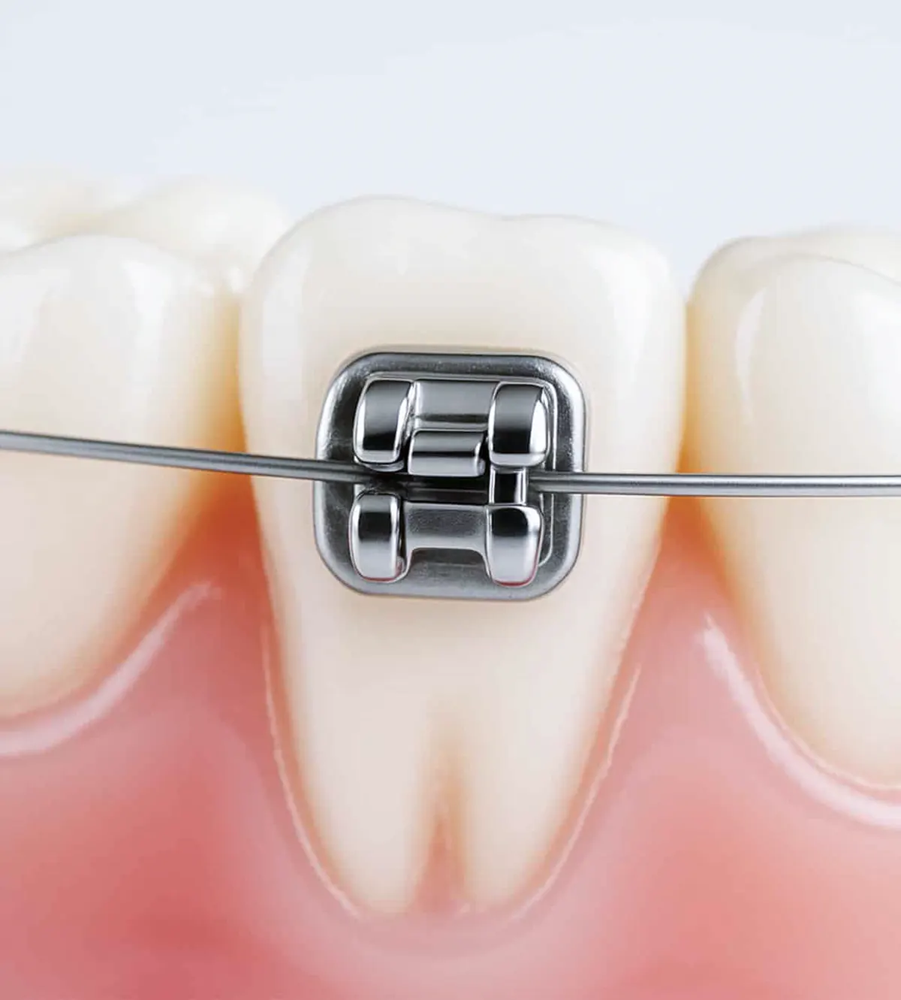

矯正專業醫師評估
由具矯正資歷的醫師評估齒列、咬合與臉型比例，規劃合適治療方向。
從齒列排列到咬合功能的完整評估
齒顎矯正不只是把牙齒排整齊，也需要評估咬合、牙周、臉型比例與清潔條件，讓治療成果兼顧美觀、功能與長期穩定。

齒顎矯正不只是把牙齒排整齊，也需要評估咬合、牙周、臉型比例與清潔條件，讓治療成果兼顧美觀、功能與長期穩定。
生活牙醫會依照每位患者的口腔條件、期待、預算與長期維護需求，安排完整檢查與醫師說明。療程開始前會先釐清適合對象、可能限制與替代方案，讓治療計畫更透明。
實際治療方式與時間會因牙齒狀況、牙周健康、咬合、生活習慣與全身病史而異，建議以現場醫師診斷為準。

由具矯正資歷的醫師評估齒列、咬合與臉型比例，規劃合適治療方向。

透過口內掃描建立齒列資料，協助醫師模擬牙齒移動與治療計畫。

整合臉部比例、牙齒排列與咬合關係，讓矯正成果兼顧美觀與功能。

依外觀需求、配戴習慣與齒列條件，評估固定式或隱形矯正方案。
每個療程都會先確認口腔基礎條件，再依診斷結果安排合適步驟與回診節奏。
| 比較項目 | 自鎖式矯正 | 隱適美隱形矯正 | 傳統矯正 |
|---|---|---|---|
| 外觀感受 | 固定裝置，外觀較俐落 | 透明牙套，配戴較低調 | 金屬裝置，視覺較明顯 |
| 適合對象 | 想兼顧效率與穩定者 | 重視外觀與清潔便利者 | 齒列或咬合較複雜者 |
| 飲食與清潔 | 固定裝置，需仔細清潔 | 可取下，吃飯刷牙方便 | 固定裝置，清潔死角較多 |
| 回診與配合度 | 定期調整，需配合清潔 | 需每天足時配戴牙套 | 定期調整，配戴要求較低 |
生活牙醫矯正團隊具備矯正資歷與認證，結合 3D 數位療程、多種矯正系統與案例經驗規劃治療。
整理諮詢時常見的問題，協助您在看診前先掌握基本方向。
若有齒列不整、咬合不適或清潔死角，歡迎先安排矯正評估，由醫師協助判斷合適方式。